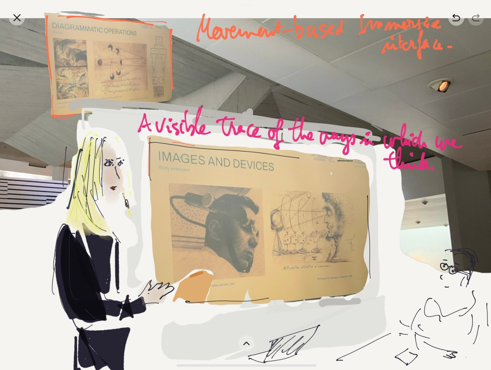
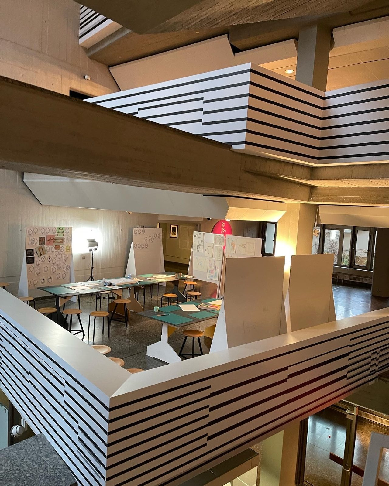
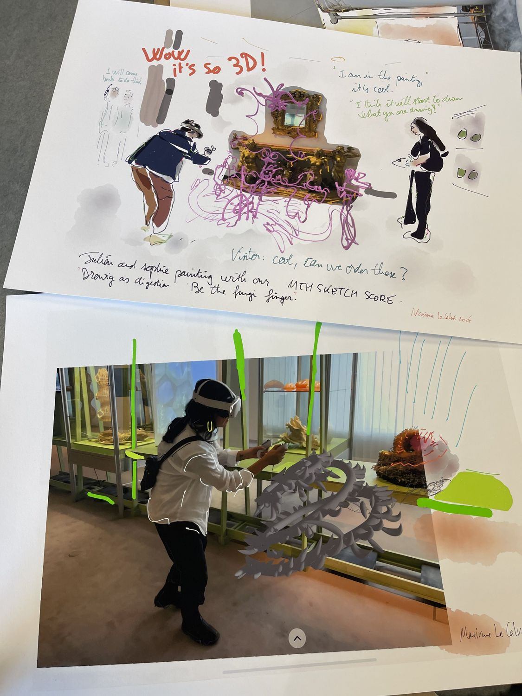
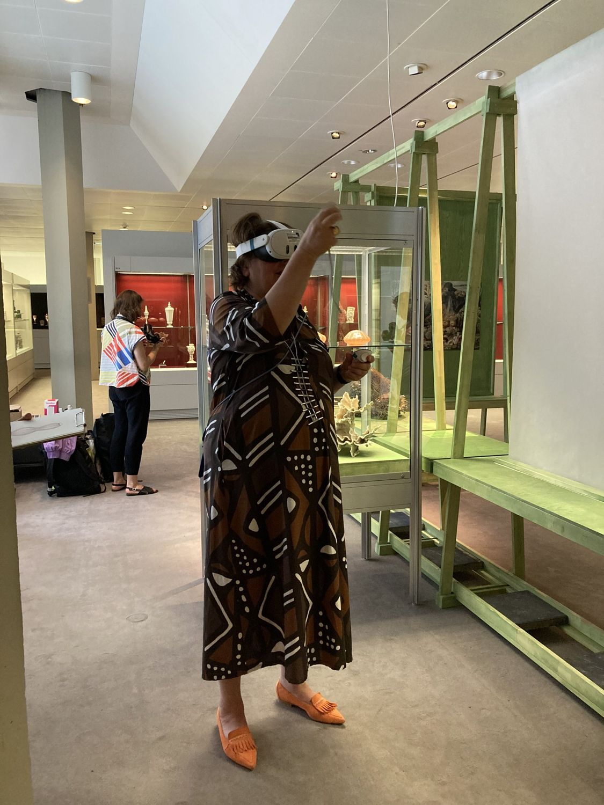
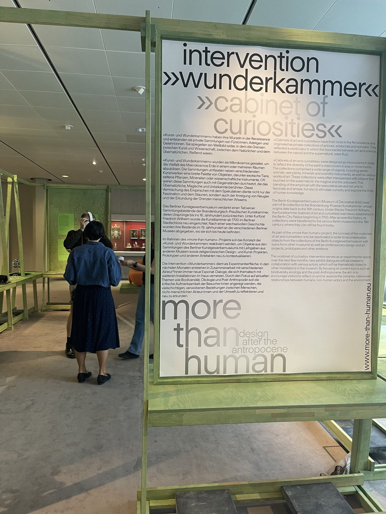
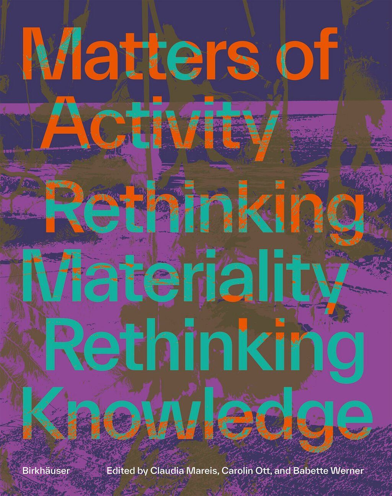

Open workshop space for sketching among the collection.


Sketch overlay: Maxime Le Calvé
Intro
Interaction / Embodied Cognition / Computational environments
Position
Speculative Realities Lab

Printed sketch overlays from a museum VR sketching session
Science and Technology Studies (STS) ↗
Research practice
Methods & Interfaces
Prototypes, methods, and experiments at the edges of emerging interfaces.
Exploring how speculative approaches can make unfamiliar technological possibilities tangible and discussable.
Photos: Kotryna Slapsinskaite, Maxime Le Calvé and workshop participants
Sketch overlays: Maxime Le Calvé
2025 · 3D Sketching for Neuroanatomical Learning, workshop, Charité, Berlin
2024 · More-than-Human Sketching / Drawing as Digestion, Kunstgewerbemuseum, Berlin ↗
2023 · 3D Sketching for Neuroanatomical Learning, workshop, Charité, Berlin
2021–2022 · Subterranean Matters, Stretching Senses School, Matters of Activity / Tieranatomisches Theater, Berlin
Printed VR sketches laid out on a table

Explorations through prototypes and speculative practices to develop questions about emerging computational environments and their relationships to human experience.
Documentation of VR sketching at the Kunstgewerbemuseum Berlin: drawing among the collection, in the headset and on paper, with sketch overlays by Maxime Le Calvé.

Drawing in VR beside a coral vitrine
Intervention »Wunderkammer«: more than humanPublication

A contribution to the Speculative Realities Lab section of Matters of Activity. Rethinking Materiality, Rethinking Knowledge, edited by Claudia Mareis, Carolin Ott and Babette Werner (Birkhäuser, 2026), pp. 305–306.
Open workshop space for sketching among the collection.


Sketch overlay: Maxime Le Calvé